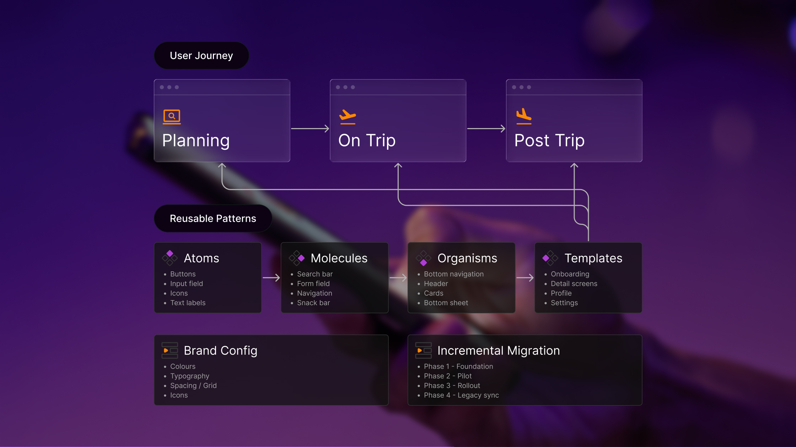
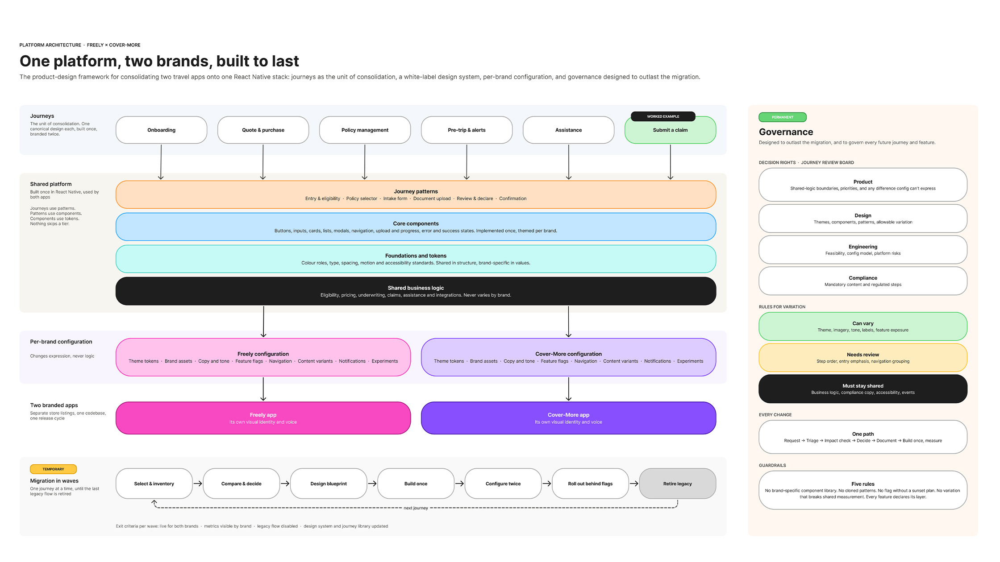
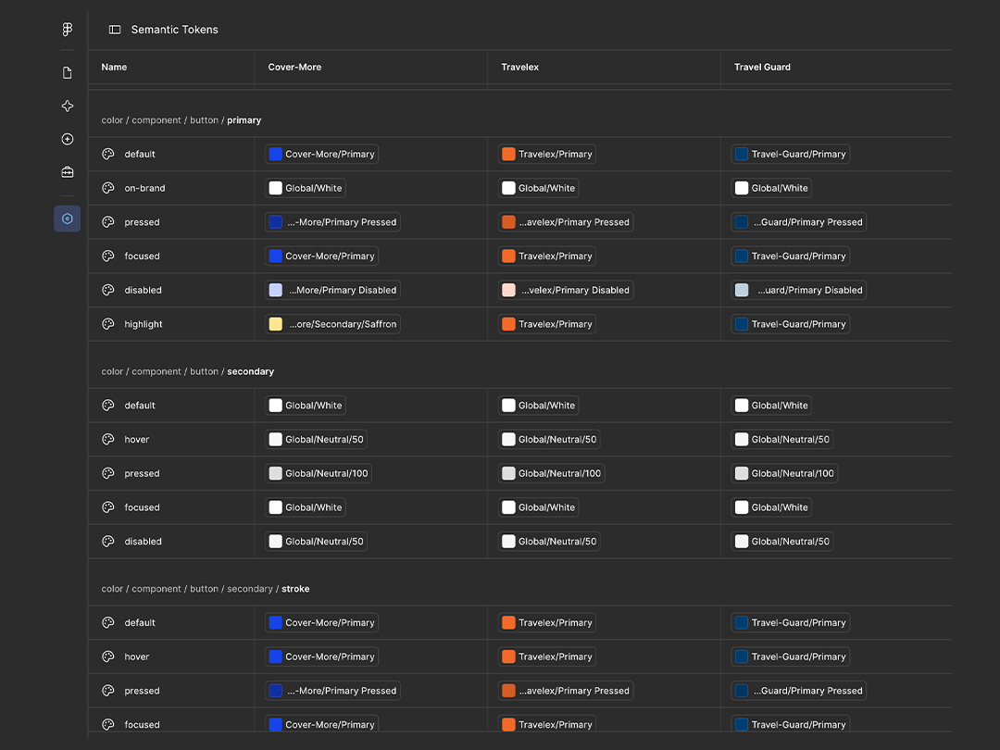
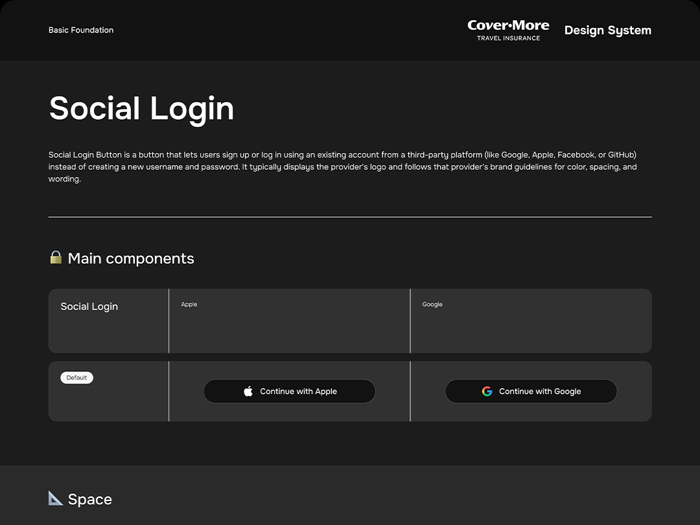
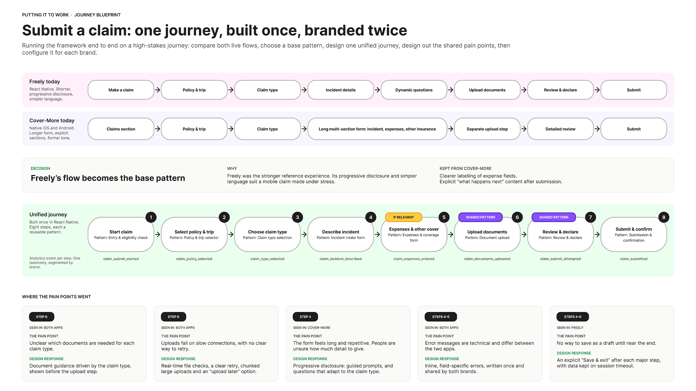

Timeline
2022-Present
Zurich Cover-More · Freely · Platform & design system
The business decided to consolidate its two travel-insurance apps onto one technology stack. Freely ran on React Native; Cover-More was built natively for iOS and Android. Same products, same rules, two codebases, two release cycles.
As Lead Product Designer, I built the product-design framework for that move, with journeys as the unit of consolidation, a white-label design system, per-brand configuration, and governance designed to outlast the migration.

Approach at a glance
01
Clarify the product, organisational and technical constraints before designing anything.
02
Map every customer journey across both apps, side by side, in one shared taxonomy.
03
Score each brand's flow and choose a "golden path" per journey, with the rationale recorded.
04
Define how one journey becomes two branded experiences through configuration, not duplication.
05
Move journey by journey, with clear entry and exit criteria, feature flags and legacy retirement.
06
Decision rights, variation rules and guardrails so the platform doesn't fragment again.
The problem
Freely and Cover-More sold the same travel insurance, but each app had its own technology, its own patterns, its own analytics and its own upkeep. Every improvement had to be designed, built and tested twice, and consistency drifted as both products grew.
The business wanted lower delivery cost, a consistent customer experience, simpler operations, and one release cycle for both apps, all at once. The target was clear.
What didn't exist was a product-design method for getting there. Without one, a consolidation like this tends to become a screen-by-screen port that carries old inconsistencies onto a new stack.
Framing the problem
Before building anything, I worked through around forty questions across product direction, journey scope, customers, existing evidence, brand strategy, technical constraints and success criteria. The answers would decide whether we needed a single harmonised journey, a shared framework with brand variations, or a migration path. In the end, it was all three.
The most important finding was how little actually differed between the brands.
That reframed the work. This wasn't a merge of two products. It was one product, expressed twice. Freely was the stronger reference experience, analytics events were structured differently in each app, and Product would own the final call when journeys conflicted.
My role
I led the product-design side of the consolidation, defining the method that product, design and engineering would use to move each journey onto the shared platform.
Key design decision
The obvious approach was to port screens across, one at a time. I pushed for the end-to-end journey as the unit of consolidation instead, such as "Submit a claim" or "Buy a policy". Each journey gets one canonical future-state design, built once and branded twice.
Six principles set the guardrails for every decision that followed.

The Journey Inventory put both apps side by side for every task, from onboarding and purchase through to claims, assistance and notifications, with entry and exit points, current status per brand, known pain points, compliance flags, priority and migration wave. For each journey, a scored comparison (task success, time, clarity, accessibility, React Native feasibility, brand fit) produced a Pattern Decision Record capturing which base pattern we chose, why, and which brand variations were allowed.
White-label experience architecture
This was the core of the framework, a layered model showing how one shared product becomes two distinct branded apps without anyone building a journey twice.
Pricing, claims, policy rules, eligibility, service logic, integrations.
Brand themes, copy variants, feature flags, navigation rules, content settings.
Foundations, tokens, components, interaction states, accessibility rules.
Reusable modules for purchase, claim intake, document upload, review and submit.
Freely and Cover-More, rendered from the same platform with different expression.
Design principle
The app renders the same journey components. The brand config changes how they look and read.
Brand configuration model
I defined the brand configuration as eight layers. Each one says what it controls per brand and what stays fixed, so "can this be different?" has an answer before anyone designs a variant.
Colour, type scale, radii, elevation, icon tone.
accessibility thresholdsLogos, illustration, icon style, imagery.
asset structureTone of voice, headlines, helper text, reassurance.
compliance copyTurn features on or off per brand.
core journeysTab labels, ordering, section naming.
IA constraintsBenefit callouts, examples, FAQs.
required disclosuresPush tone and message templates.
trigger logicA/B tests, staged rollouts, betas.
event taxonomy

Decision rule
If a difference can't be expressed through tokens, assets, copy, navigation or flags, it goes to Product before anyone designs a separate variation.
Design system structure
The white-label system was organised so designers work at the pattern level, not the screen level. A journey references patterns, patterns reference components, and components reference tokens. Nothing skips a tier.
Shared in structure, brand-specific in values.
Implemented once in React Native, themed per brand.
The bridge between components and journeys.
Each pattern ships with its standard flow, screen templates, empty, loading, error and success states, accessibility handling, and explicit brand-variation hooks that show exactly where text and visuals are allowed to differ. Brand variation happens inside a pattern, never by cloning it.
Rules for variation
The biggest long-term risk was brands slowly drifting back into separate flows. So I made the boundaries explicit, defining what can vary freely, what needs review, and what must always stay shared.
Any request for a difference passes a five-question filter. Does it create clear customer value? Is it brand strategy, or just legacy familiarity? Can config handle it? Does it keep feature parity and shared measurement? Is the added complexity worth it?
Putting it to work
To prove the framework, I ran it end to end on a high-priority, high-stakes journey. Both apps had a live claims flow. Freely used shorter, progressive disclosure; Cover-More used a longer multi-section form with a more detailed checklist. Customers in both apps struggled with the same three things. They didn't know which documents they needed, uploads failed with no clear retry, and error messages were inconsistent.
Freely's pattern became the base. Two Cover-More strengths were kept, namely clearer labelling of expense fields and more explicit "what happens next" content after submission. The unified journey became eight steps, each mapped to a reusable pattern.
Pattern · Entry & eligibility check
Pattern · Policy & trip selector
Pattern · Claim type selection
Pattern · Incident intake form
Pattern · Expenses & coverage form
Pattern · Document upload (shared)
Pattern · Review & declare (shared)
Pattern · Submission & confirmation
"Let's get your claim started"
Tell us what happened, just the key details.
"Submit your claim"
Please provide details of the incident, including date and location.
Same steps, same rules, same mandatory declarations, same components. Only the theme, voice and emphasis change. Design decisions from the blueprint fixed the recurring pain points with an explicit "Save & exit" after each major step, large uploads with an "upload later" option, inline field-specific errors, and data preserved on timeout.
The blueprint also defined one canonical event taxonomy, segmented by brand, replacing the two differently structured schemas.

Migration in waves
Each journey moves as its own wave, going from inventory and comparison to deciding the pattern, designing the future state, building once in React Native, configuring for both brands, rolling out behind feature flags, and finally retiring the legacy flow. Clear criteria stop journeys getting stuck between old and new.
Governance
The framework was designed as the default model for every future feature, not a one-off migration plan. Decision rights were explicit. Product owns shared-logic boundaries and priorities; Design owns themes, components, patterns and allowable variation; Engineering owns feasibility and the config model; Compliance owns mandatory content. A lightweight Journey Review Board resolves conflicts between brand requests and platform consistency.
Every change follows the same path.
And five guardrails keep it honest.
Making it usable
I turned the method into working templates in Miro, so product, design, engineering, brand and compliance could all work from the same artefacts.
The workshop had one rule. No debate leaves the room without a decision, an owner, or a date.
Outcomes
2→1
Two app stacks moving onto one React Native platform, with two distinct brands on top
1
Unified release cycle for both apps, with features configured per brand
5
Layer framework, from journey inventory to governance, reusable for every future journey
Every architecture decision is measured against better customer outcomes, faster delivery, or stronger governance. The result is one governed foundation that is consistent where it counts, distinct where it matters, and built to keep scaling.
Reflection
Platform consolidation is usually framed as an engineering project. This work showed that the hardest decisions are product-design decisions, like which journey wins, what a brand is really allowed to change, and who gets to say no.
These are the lessons I take into any multi-brand or platform work.
The most valuable output wasn't a component library. It was a shared language that let product, design, engineering and brand make consistent decisions without me in the room.